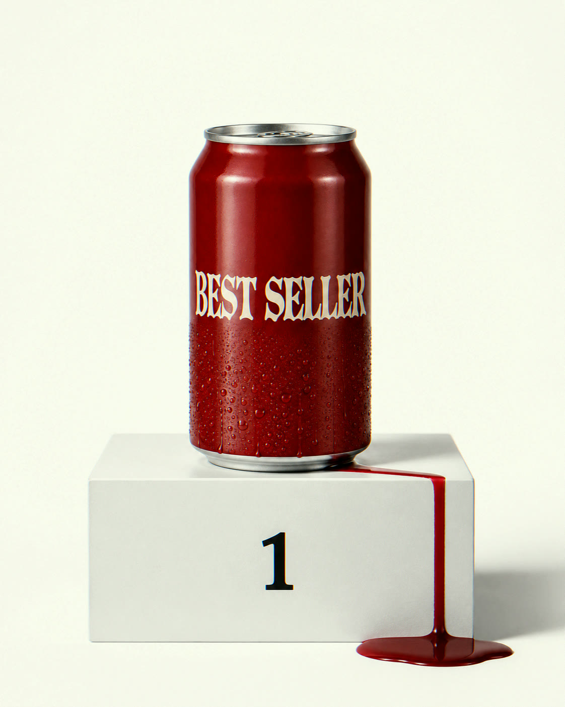

Every food & beverage brand
leaks money. I find it.
Your best seller, mid-leak.Every CPG lineup has one. I build the AI system that finds yours. Built once, yours to keep.

You've been scaling the products that lose you money.
The audit finds it. The build fixes it. You keep everything.
01The problem
The leak doesn't show up on any report.
Your P&L tells you what you spent. It has no line for what you never noticed.
An account slows down long before it leaves
The order log sees it months out. Nobody reads the order log.
A best seller can lose money quietly
Promos, slotting and freight land after the price is set. The P&L never itemizes them per SKU.
Deductions get taken, not checked
Distributors subtract fees from every payment. Checking means reading every line — so nobody does.
The warning was always on record
Orders, emails, settlements — the signal sat in tools nobody opens. Nothing was listening.
The mistakes you catch cost you an afternoon.
The ones nobody catches cost you the quarter.
02How it works
One system that answers the questions your reports can't.
Shopify, QuickBooks, Notion and your inbox, connected into one place you can ask — in plain English, like a text message. It answers with receipts — the invoice line, the settlement row, the order — and shows you what to do next. You approve; nothing acts on your books without you.
Week one — the audit
Read-only access to the tools you already use, then a week inside your numbers. Nothing installed, nothing migrated.
Week two — the first fix
Your biggest leak gets a name, a dollar figure and a working fix. You see it run on your real numbers.
Months one to three — the build
One piece at a time, biggest leak first. Each piece answers a question you couldn't answer before: true margin by SKU, deductions worth disputing, accounts going quiet. It reads the ugly inputs too — distributor statements, settlement PDFs, freight bills — the numbers that live in attachments.
Then — the handover
Month three doubles as the training month: working sessions with your team, the runbook written, them driving while I'm still in the room. Everything stays in your accounts when I leave — that's the point of it.
03Case study
Thirty-plus brands. One deadline. Nothing fell through.
Sweet Vegan runs an annual giveaway called the Harvest Basket. Thirty-plus brands each contribute product — every one pitched, confirmed, shipped and photographed before a single date.
It ran on inboxes and memory. The campaign's size was capped by how many vendors one person could chase by hand.
I built the dashboard: every vendor in one view, every status live. Anything stalling surfaced before it became a problem.
That season's basket was their biggest to date. Nothing fell through, and nobody worked a longer week.
That system watched vendors. The ones I build now watch money — same machine, pointed at margins, deductions and churn. The audit exists so you see it work on your numbers before the build costs you anything real.
Sweet Vegan's CEO still opens it every morning.
Built by Brandon Adams · brandon@vnmsfx.com
04What you get
Finding the leaks is week one. This is what compounds.
Walk into vendor calls with receipts
Every shipment, confirmation and late delivery, attached.
Know which channel actually pays you
Shopify, wholesale, Amazon — true margin on each, after everything.
Call the customer before they leave
Every account slowing down, flagged while it's still fixable.
Hand your accountant a clean year
Every transaction categorized, every deduction flagged. Nothing reconstructed in April.
Hire because you're growing, not because you're behind
The work that would have justified the headcount, already absorbed.
Rerun the campaign that actually sold
Every send, open and reorder it drove — on record, not in someone's memory.
05Day to day
Monday, 7:40 a.m.
Nobody lifted a finger
to make that morning happen.
7:40
Coffee. “What happened this weekend?”
7:41
Sales, refunds, two vendors behind. Thirty seconds.
7:42
The weekend's orders are already logged. Nobody logged them.
8:00
You're doing the one job nobody can do for you: deciding.
06Who builds it
One person. On purpose.
I'm Brandon Adams, New York. I build AI systems full-time — my own media production studio runs on the same system, with commissioned work for ByteDance's Dreamina and CapCut, and for Sweet Vegan. No juniors, no handoffs: the person you talk to is the person inside your numbers.

07Terms of engagement
You own everything. I'm replaceable. That's the design.
Your accounts, your logins, your data. No platform to migrate to, no proprietary lock-in, no operations taken over.
08Pricing
First conversation free. First fix live in two weeks.
Who this is for
Founder-led food & beverage brands, four or more years in, doing real revenue with a small team. You sell direct and wholesale — maybe subscriptions, maybe a stall or a shop. You still answer customer emails yourself. Nobody's job title is "operations," so every question about margin, a distributor deduction or an account gone quiet eventually lands on you. The business outgrew the spreadsheets a while ago and everyone just worked harder instead.
Free
The teardown
30 minutes. You show me where things live; I name two leaks I'd go after first.
$2,500
The leak audit
A week inside your numbers. Where the money is going and what it takes to stop it. Findings and a build map, yours either way — and it credits into the build.
Ready now? Buy the audit →I'll email you within a day to start week one.
$5,000/mo · 3 months
The build
Each piece answers a question you can't answer today. Biggest leak first. Month three is the training month.
$2,500/mo
The partnership
After the build, optional. Models change, tools break — monthly review, priority fixes, upgrades. I keep the machine current; your team runs it.
What you actually pay, in order
- The leak audit$2,500
- Build, month one — $5,000 less the audit credit$2,500
- Build, month two$5,000
- Build, month three — training and handover$5,000
- Audit through handover$15,000
The audit credits in, so it's $15,000 all-in — not $17,500. The partnership afterwards is optional and separate.
The offer is new, and priced that way. This rate holds until the first two case studies are written. Then it goes up.
09Questions
Frequently asked questions
How long does this take?
Thirty minutes for the teardown. A week for the audit. Then the build: three months, with its first piece live in the first two weeks. Month three is training and handover. The partnership after that is optional.
What if you disappear?
Everything lives in your accounts, in plain text, readable by any competent human. That's the point of it.
Why not just hire someone?
An ops hire fixes this by working the spreadsheets every night. This fixes it so nobody has to. Three months, and the knowledge lives in files you own — not in someone's head.
We don't use any AI tools yet
A Claude seat runs about $20–30 a month, and setting it up is part of the build's first week. You'll be using it by day two.
We already use ChatGPT
Using ChatGPT is asking a smart stranger questions. This wires it into your orders, your vendors, your history — so the answers are about you.
We already bought a CRM once
So did most of my clients. That's the point — this isn't another tool to adopt. It's the tools you kept, finally connected.
What if the audit finds nothing?
Then you'll know that for certain, which is worth something too. But the questions in section 01 usually have uncomfortable answers.
Is our data safe?
The system lives in your accounts, under your logins, on least-privilege access — read-only wherever possible. Data is processed through business-tier AI services under commercial terms, never personal chat accounts, and nothing acts on your books without your approval. When we part ways you revoke access in one click and everything I built stays behind, working. The full data-flow is public: the security page.